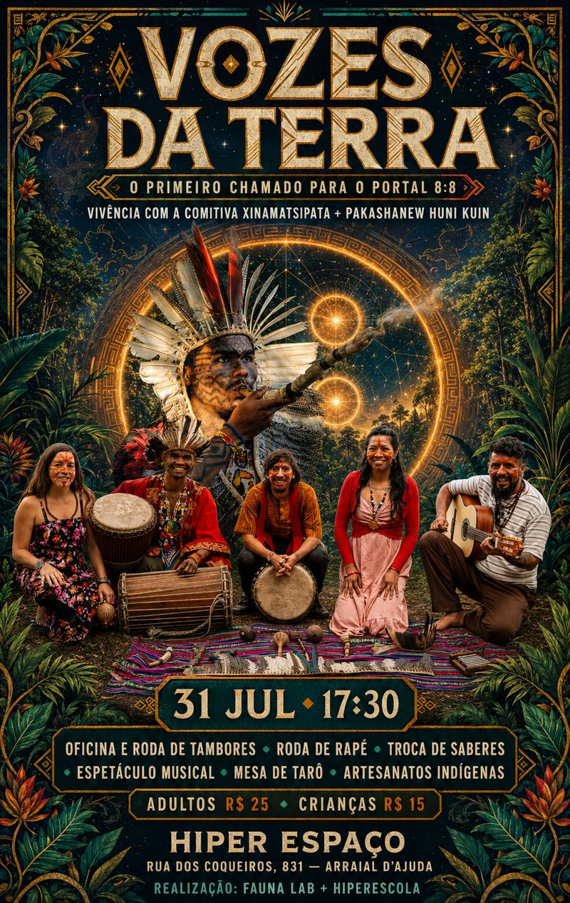

O primeiro chamado para o Portal 8:8. Uma noite de tambor, rapé, música e troca de saberes com a comitiva Xinamatsipata + Pakashanew Huni Kuin.
Quero minha vaga no WhatsAppExiste um chamado que a cidade grande não escuta. Um ritmo que vem antes das palavras, antes das telas, antes da pressa.
Vozes da Terra é o primeiro chamado para o Portal 8:8 — uma noite em que a ancestralidade dos povos originários brasileiros se encontra com a dos povos do norte da Argentina, guiada pessoalmente pela comitiva Xinamatsipata + Pakashanew Huni Kuin.
Não é um espetáculo pra assistir de longe. É uma vivência pra sentir com o corpo inteiro.
Ritmo ancestral em comunidade
Centramento guiado pela comitiva
Música ancestral ao vivo
Escuta e autoconhecimento
Peças com história, à venda
Contato direto com a comitiva
Sim. A vivência é guiada do início ao fim pela própria comitiva, que detém esse conhecimento tradicional. Ninguém entra sozinho na experiência.
Pode — o evento tem contribuição reduzida para crianças (R$15) e é pensado para receber famílias.
A mesa de tarô é um convite à escuta, não uma prova de conhecimento. Você só precisa chegar aberto.
A proposta do encontro é justamente formar roda e comunidade — ir sozinho é uma das formas mais comuns de chegar.
Direto pelo WhatsApp, pelo botão desta página. É lá que confirmamos sua presença.
A pergunta é só se você vai estar dentro dela.
Quero minha vaga no WhatsApp